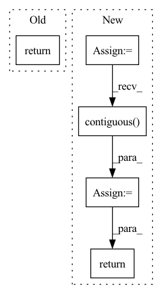

Pattern ID :131
Before Change
points_mean = features[:, :, : self.C_in].sum(
dim=1, keepdim=False
) / num_voxels.type_as(features).view(-1, 1)
return points_mean.contiguous()
class SparseCNN(nn.Module):After Change
:feature FloatTensor of shape (N, K, C)
:return FloatTensor of shape (N, C)
denominator = occupancy.type_as(feature).view(-1, 1)
feature = (feature.sum(1) / denominator).contiguous()
return feature
class SparseCNN(nn.Module):In pattern: SUPERPATTERN
Frequency: 4
Non-data size: 5
Instances Fragment ID: 762475
Project Name: jhultman/vision3d
Commit Name: 1736771fde51c478418ee6b5bb8b783fb604b064
Time: 2020-02-09
Author: 27909223+jhultman@users.noreply.github.com
File Name: pvrcnn/backbone.py
M Class Name: VoxelFeatureExtractor
N Class Name: VoxelFeatureExtractor
M Method Name: forward(3)
N Method Name: forward(4)
M Parent Class: nn.Module
N Parent Class: nn.Module
M File Name: pvrcnn/backbone.py
N File Name: pvrcnn/backbone.py
M Start Line: 42
M End Line: 46
N Start Line: 49
N End Line: 51
Before Change
def forward(self, proposals, keypoints):
gridpoints = self.sample_gridpoints(proposals, self.cfg.n_gridpoints)
return gridpoints
After Change
gridpoints = self.sample_gridpoints(proposals)
gridpoints = gridpoints.view(1, -1, 3)
pooled_features = self.pnet(keypoints_xyz, keypoints_features, gridpoints)[1]
n = proposals.wlh.shape[0]
m = self.cfg.n_gridpoints
pooled_features = pooled_features.view(1, -1, n, m) \
.permute(0, 3, 1, 2).contiguous() .view(1, n, -1)
pooled_features = self.reduction(pooled_features)
return pooled_features
Fragment ID: 762491
Project Name: jhultman/vision3d
Commit Name: 0ae880bf04e8933c66dbe389fe9ecc4cec8cef88
Time: 2020-02-08
Author: 27909223+jhultman@users.noreply.github.com
File Name: pvrcnn/roi_grid_pool.py
M Class Name: RoiGridPool
N Class Name: RoiGridPool
M Method Name: forward(4)
N Method Name: forward(3)
M Parent Class: nn.Module
N Parent Class: nn.Module
M File Name: pvrcnn/roi_grid_pool.py
N File Name: pvrcnn/roi_grid_pool.py
M Start Line: 35
M End Line: 36
N Start Line: 56
N End Line: 69
Before Change
length = input.size(1)
return self.pe[:, :length]
class DPTBlock(nn.Module):After Change
// x is batch, channels, seq_len
x = x + self.pe[:, :, :x.size(2)]
x = self.dropout(x)
x = x.permute(0, 2, 1).contiguous()
return x
class DPTBlock(nn.Module): Fragment ID: 762471
Project Name: zhongyang-debug/attention-is-all-you-need-in-speech-separation
Commit Name: 361486e2e14685189e9a65a81fa779b4728c6e18
Time: 2022-08-16
Author: 68770882+Zhongyang-debug@users.noreply.github.com
File Name: model/sepformer.py
M Class Name: Positional_Encoding
N Class Name: Positional_Encoding
M Method Name: forward(2)
N Method Name: forward(2)
M Parent Class: nn.Module
N Parent Class: nn.Module
M File Name: model/sepformer.py
N File Name: model/sepformer.py
M Start Line: 133
M End Line: 135
N Start Line: 143
N End Line: 155
Before Change
alignments = torch.stack(alignments).transpose(0, 1)
outputs = torch.stack(outputs).transpose(0, 1).contiguous()
return outputs, alignments
def is_end_of_frames(output, eps=0.2): /ǖ.2After Change
outputs = []
alignments = []
stop_outputs = []
t = 0
memory_input = initial_memory
while True:
if t > 0:
if greedy:
memory_input = outputs[-1]
else:
// combine prev. model output and prev. real target
// memory_input = torch.div(outputs[-1] + memory[t-1], 2.0)
// add a random noise
// noise = torch.autograd.Variable(
// memory_input.data.new(memory_input.size()).normal_(0.0, 0.5))
// memory_input = memory_input + noise
memory_input = memory[t-1]
// Prenet
processed_memory = self.prenet(memory_input)
// Attention RNN
attention_rnn_hidden, current_context_vec, alignment = self.attention_rnn(
processed_memory, current_context_vec, attention_rnn_hidden,
inputs)
// Concat RNN output and attention context vector
decoder_input = self.project_to_decoder_in(
torch.cat((attention_rnn_hidden, current_context_vec), -1))
// Pass through the decoder RNNs
for idx in range(len(self.decoder_rnns)):
decoder_rnn_hiddens[idx] = self.decoder_rnns[idx](
decoder_input, decoder_rnn_hiddens[idx])
// Residual connectinon
decoder_input = decoder_rnn_hiddens[idx] + decoder_input
output = decoder_input
stop_token_input = decoder_input
// stop token prediction
stop_token_input = torch.cat((output, current_context_vec), -1)
stop_output = self.stop_token(stop_token_input)
// predict mel vectors from decoder vectors
output = self.proj_to_mel(output)
outputs += [output]
alignments += [alignment]
stop_outputs += [stop_output]
t += 1
if (not greedy and self.training) or (greedy and memory is not None):
if t >= T_decoder:
break
else:
if t > 1 and is_end_of_frames(output, self.eps):
break
elif t > self.max_decoder_steps:
print(" !! Decoder stopped with "max_decoder_steps". \
Something is probably wrong.")
break
assert greedy or len(outputs) == T_decoder
// Back to batch first
alignments = torch.stack(alignments).transpose(0, 1)
outputs = torch.stack(outputs).transpose(0, 1).contiguous()
stop_outputs = torch.stack(stop_outputs).transpose(0, 1).contiguous()
return outputs, alignments, stop_outputs
def is_end_of_frames(output, eps=0.2): /ǖ.2 Fragment ID: 762469
Project Name: coqui-ai/tts
Commit Name: 5750090fcd4a6718608c7357e3890f5b2a545ae0
Time: 2018-03-22
Author: egolge@mozilla.com
File Name: layers/tacotron.py
M Class Name: Decoder
N Class Name: Decoder
M Method Name: forward(3)
N Method Name: forward(3)
M Parent Class: nn.Module
N Parent Class: nn.Module
M File Name: layers/tacotron.py
N File Name: layers/tacotron.py
M Start Line: 255
M End Line: 347
N Start Line: 259
N End Line: 359